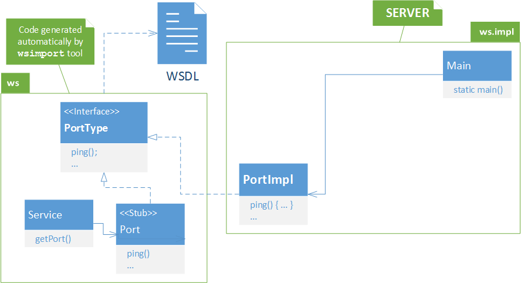
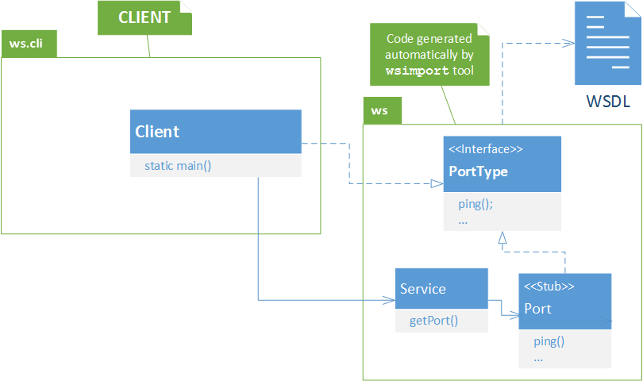

Web Service contract
Os Web Services também têm uma linguagem própria para descrever o seu contrato com os clientes.
A WSDL permite especificar a interface funcional (port type)
- operações com entradas, saídas e erros -
e também a vinculação (binding) com tecnologias concretas
- habitualmente SOAP sobre HTTP.
A WSDL é baseada em XML de forma a ser independente da plataforma e
usa XSD para definir o detalhe dos tipos de dados de entrada e saída (e erros) em cada operação.
Um documento XML diz-se válido se, para além de ser bem-formado, respeita também as restrições impostas por um XSD.
Para uma explicação mais detalhada destas tecnologias, ver:
Exemplo
É possível implementar Web Services partindo de um contrato WSDL (e XSD) já existente. Esta abordagem ao desenvolvimento de serviços é chamada contract-first.
Vamos então ver um exemplo de um Web Service feito em Java que segue a abordagem contract-first.
Notas:
As pastas que contêm o código não devem ter espaços no seu caminho.
O servidor e
o cliente usam a biblioteca UDDINaming apresentada na aula anterior.
- Obter o código do servidor: 
-
O contrato do serviço faz parte do código fonte do servidor e
está em: /src/main/resources/Ping.wsdl.
Estudar o contrato seguindo os comentários numerados que explicam o conteúdo das diferentes seções do documento:- namespaces
- service definition
- binding definitions
- port type definitions
- message definitions
- type definitions
-
Confirmar que a classe de implementação do serviço está anotada de forma a ficar associada ao WSDL existente.
Deverá ter os atributos endpoint interface (nome do tipo Java do PortType), wsdlLocation (nome do ficheiro WSDL), name (definido no WSDL), portName (definido no WSDL), targetNamespace (definido no WSDL) e serviceName (também definido no WSDL). - Construir o servidor:
- cd ping-ws_juddi
-
mvn compile
Antes de chegar à fase compile, o Maven executa a fase generate-sources onde a ferramenta wsimport é chamada para gerar o código de adaptação no servidor (as classes geradas podem ser consultadas em target/).
A localizaçao do WSDL é referenciada no pom.xml. - Executar o servidor:
-
mvn exec:java
O nome da classe a executar e os argumentos estão definidos no pom.xml
O servidor deve executar sem erros, disponibilizando o endpoint address. - Confirmar que o servidor está à espera de pedidos e consultar o contrato disponibilizado é o ficheiro original (e não é gerado automaticamente):

- Obter o código do cliente: 
- Construir o cliente:
- cd ping-ws-cli_juddi
-
Confirmar que o pom.xml do cliente referencia o ficheiro do WSDL e
não o URL do servidor.
No pom.xml, deve constar:... <wsdl.directory>${basedir}/../ping-ws_juddi/src/main/resources</wsdl.directory> <wsdl.filename>Ping.wsdl</wsdl.filename> ... <wsdlDirectory>${wsdl.directory}</wsdlDirectory> <wsdlFiles> <wsdlFile>${wsdl.filename}</wsdlFile> </wsdlFiles> ... -
mvn compile
Antes de chegar à fase compile, o Maven executa a fase generate-sources que usa a ferramenta wsimport com o ficheiro do contrato WSDL
para gerar as classes de invocação do serviço (as classes podem ser consultadas em target/)
- Executar o cliente:
-
mvn exec:java
O cliente deve executar fazendo uma invocação remota.
Existe a probabilidade de 1/3 do cliente receber a resposta esperada ou um erro simulado (de acordo com a implementação do servidor neste exemplo).
Resumo
Primeiro foi construído e iniciado o servidor, que fica à espera de pedidos no endpoint address e disponibiliza o WSDL original (e não um WSDL gerado automaticamente).
Em seguida,
foi necessário verificar que o cliente referencia o ficheiro WSDL e não o URL.
Depois,
o cliente usa o WSDL para gerar o código de invocação.
Finalmente,
o cliente faz uma invocação remota que pode receber o resultado esperado ou um erro simulado.
Depois de testado o Exemplo, passar ao Exercício.
Exercício
Contract-first
O objectivo desta primeira parte da aula é construir um Web Service contract-first, ou seja, gerar o código do servidor a partir do contrato WSDL e depois fazer a implementação em Java.
- Para começar, escolha o WSDL do serviço que pretende implementar. Sugestões:
- Calculadora
- Projeto: Upa Transportes
-
O ponto de partida é o exemplo
Web Service contract-first apresentado acima,
que deverá ser modificado.
Para os serviços do projeto deverá ser usado o projeto base. - Analise todos os ficheiros do projecto.
- Analisando o WSDL, que operações oferece o Web Service, quais os respectivos parâmetros e excepções?
-
Em que fase do ciclo de vida de construção Maven
é que o WSDL é usado para gerar código?
Onde é colocado o código gerado pela ferramenta wsimport? - Qual a classe que implementa o Web Service?
- Copie o ficheiro WSDL a implementar para a pasta src/main/resources
-
Faça mvn generate-sources.
Caso o WSDL esteja bem formado e válido, a ferramenta gera vários ficheiros que suportam o web service. Entre eles, estarão as classes para os tipos complexos usados como parâmetros e a interface Java que define o Web Service. - Consulte as classes geradas, em especial a classe ...Service, e descubra a interface Java que foi gerada a partir do WSDL.
-
Crie a classe de implementação do serviço ...Port,
que deve implementar a interface Java gerada (PortType no WSDL).
Em termos práticos,
isto significa que todos os métodos listados na interface
devem ser implementados na classe do serviço.
Cada método é uma operação do Web Service,
com entradas, saídas e excepções.
Sugestão: para começar não implemente completamente as operações, limite-se a retornar imediatamente valores pré-definidos. - Crie a classe ...Main com base na HelloMain.
- Edite o ficheiro pom.xml do projecto
- Altere os elementos mainclass, ws.name, ws.url, id
- Guarde as alterações
- Acrescentar a anotação @WebService com todos os atributos necessários (para descobrir os valores terá que consultar o código gerado e o WSDL, onde são definidos originalmente).
-
Faça mvn install para compilar o código e gerar o JAR.
Nota: Os passos necessários para compilar, gerar o JAR, correr, etc. podem também ser encontrados readme.txt de cada projeto. -
Faça mvn exec:java para correr o servidor
(o nome da classe e os argumentos foram definidos no pom.xml).
O servidor deve executar sem erros.
Para encerrar o servidor carregue em enter. - Consulte o endereço do serviço publicado (deve começar com http://localhost:8080/...?WSDL). Confirme que o WSDL está a ser fornecido correctamente.
-
O Web Service contract-first está pronto a receber pedidos.
Um cliente de teste pode ser desenvolvido de forma idêntica aos já vistos na aula de laboratório anterior. Ou seja, a partir do WSDL, fazer mvn generate-sources, ver o código gerado e depois fazer as chamadas desejadas.
@WebService(
endpointInterface="...",
wsdlLocation="...",
name="...",
portName="...",
targetNamespace="...",
serviceName="..."
)
public class ...Port implements ...PortType {
Comparando a abordagem contract-first com a abordagem implementation-first, que vantagens e desvantagens encontra em cada uma?
Extras
Sugestão: Visualizar e validar um WSDL no Eclipse:
- No Package Explorer, seleccione o seu WSDL com a tecla direita e escolha Validate;
-
Consulte a vista Problems (parte inferior da janela do Eclipse)
para verificar eventuais problemas ou avisos.

Sugestão: WSDL Viewer
-
Submeta um endereço de um WSDL na página para aplicar uma transformação XSLT e
produzir uma visão do documento WSDL (um pouco) mais human-friendly